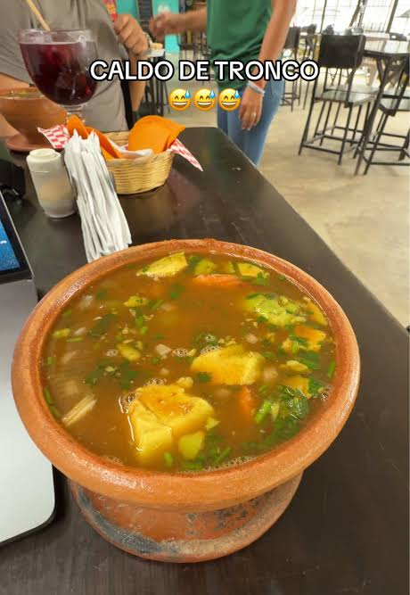
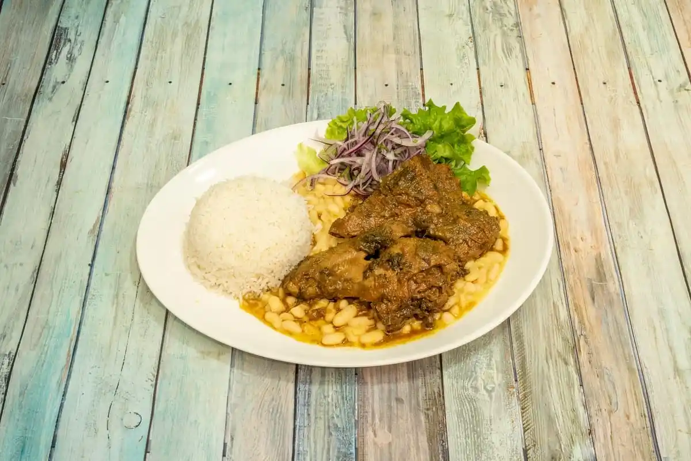
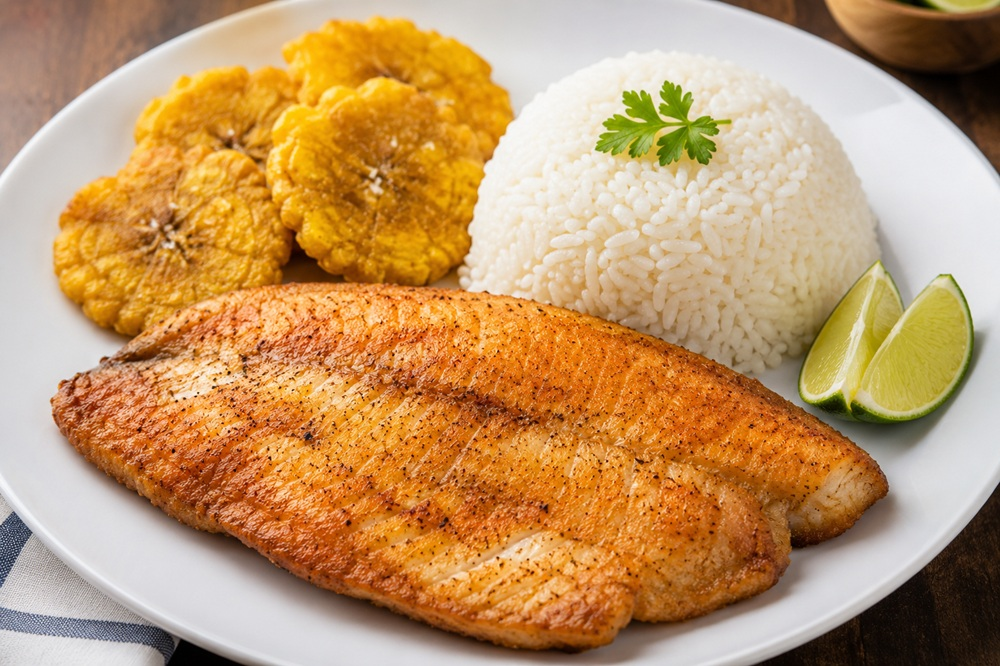
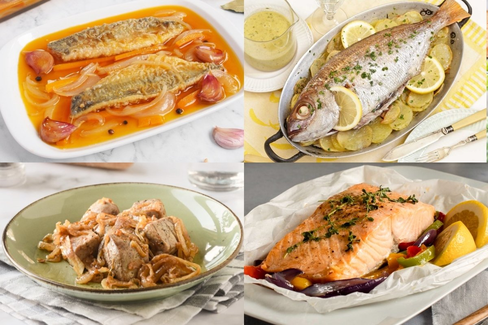

1. Breve descripción del cantón Mocache
Mocache es un cantón perteneciente a la provincia de Los Ríos, ubicado en la región Costa del Ecuador. Su cabecera cantonal lleva el mismo nombre.
Se caracteriza por sus tierras fértiles, sus paisajes naturales y su importante actividad agrícola. Entre sus principales productos se encuentran el cacao, arroz, maíz, banano y otros cultivos.
El cantón conserva tradiciones de la cultura montubia, que se reflejan en las costumbres, la gastronomía, las festividades y las actividades de sus habitantes.
La agricultura y el comercio representan actividades importantes para el desarrollo económico de Mocache.
2. Parroquias del cantón Mocache
El cantón Mocache tiene como cabecera cantonal a la ciudad de Mocache y cuenta con una parroquia rural.
Parroquia urbana
- Mocache.
Parroquia rural
- La Esmeralda.
Sus comunidades desarrollan actividades agrícolas, comerciales y ganaderas que contribuyen al crecimiento del cantón.
3. Platos de comida típicos
La gastronomía de Mocache se relaciona con las costumbres culinarias de la región Costa y utiliza productos cultivados en la zona.
Caldo de tronquito

Una sopa sustanciosa y reparadora hecha a base del pene de res (conocido como "tronquito"). Se cocina a fuego lento durante varias horas con verduras, ajo, hierbitas y especias hasta que la carne quede muy suave y el caldo adquiera un sabor concentrado. En la tradición popular se le atribuyen propiedades reconstituyentes y afrodisíacas.
Seco de gallina criolla

Estofado criollo elaborado con gallina de campo, cuya carne es más firme y sabrosa que la del pollo común. Se cocina a fuego lento en una salsa espesa a base de refrito (cebolla, pimiento, ajo), cerveza o chicha, cilantro y achiote. Se sirve acompañado de arroz amarillo (o con achiote) y maduro frito.
Seco de pato

Un guiso de sabor intenso y característico. La carne de pato se trocea y se marina previamente para luego estofarse lentamente en una reducción de refrito, chicha de jora o cerveza, ají para seco y hierbitas. La cocción prolongada suaviza la carne e impregna la salsa de un perfil aromático único. Se acompaña habitualmente con arroz amarillo y chifles o maduro frito.
Tilapia frita

Filete o pescado entero de tilapia sazonado con ajo, comino, sal y limón, frito en aceite caliente hasta lograr una piel dorada y crocante por fuera y una carne jugosa por dentro. Se sirve típicamente con patacones o chifles, arroz y una ensalada fresca de cebolla, tomate y cilantro.
Humitas

Pastelitos de maíz tierno (choclo) molido y mezclado con queso, mantequilla, huevo y un toque suave de sal o azúcar. La mezcla se envuelve en las propias hojas puras del choclo (tusas o panca) y se cocina al vapor, logrando una textura suave, esponjosa y ligeramente dulce.
Preparaciones con pescado

En la gastronomía de la región también se encuentran diferentes preparaciones con pescado, acompañadas de arroz, verde y otros productos locales.
4. Lugares turísticos del cantón Mocache
Río Mocache
Es uno de los elementos naturales representativos de la zona. Sus alrededores permiten apreciar paisajes naturales y disfrutar del ambiente de las comunidades cercanas.
Balnearios naturales
Los espacios naturales relacionados con los ríos son lugares de interés para los visitantes, especialmente durante las temporadas de descanso. Permiten disfrutar del paisaje y realizar actividades recreativas donde el acceso sea seguro.
Parque central de Mocache
Es un espacio público donde los habitantes pueden reunirse, descansar y disfrutar de las actividades de la ciudad. También permite conocer el ambiente cotidiano del cantón.
Comunidades agrícolas
Las comunidades rurales son importantes para conocer las actividades productivas, los cultivos y las tradiciones montubias que forman parte de la identidad de Mocache.
Entornos naturales
Los paisajes rurales, la vegetación y las zonas agrícolas permiten apreciar la riqueza natural del cantón y conocer la importancia del campo para sus habitantes.
Estos espacios son importantes porque contribuyen al turismo local y permiten valorar las costumbres y los recursos naturales de Mocache.
Consulta lugares y ubicaciones: Lugares turísticos de Mocache
5. Hoteles donde alojarse en Mocache
Las personas que visitan Mocache pueden buscar establecimientos de alojamiento en el cantón y en ciudades cercanas de la provincia de Los Ríos.
Para consultar las opciones disponibles, puedes utilizar el siguiente enlace:
Consultar hoteles en MocacheSe recomienda verificar los precios, servicios, ubicación y disponibilidad antes de realizar una reservación.
6. Alcalde del cantón Mocache
Yenny Domínguez Saltos
El alcalde es la autoridad principal del Gobierno Autónomo Descentralizado Municipal de Mocache.
Su función consiste en dirigir la administración municipal, impulsar obras públicas, gestionar servicios para la comunidad y promover el desarrollo del cantón.
Nombre del alcalde: verificar el nombre de la autoridad municipal vigente antes de presentar el proyecto.
7. Población del cantón Mocache
La población del cantón Mocache está distribuida entre la cabecera cantonal y sus comunidades rurales.
Para conocer la cantidad exacta de habitantes, se debe consultar el Censo de Población y Vivienda de 2022 del Instituto Nacional de Estadística y Censos del Ecuador.
La información poblacional es importante para conocer el crecimiento del cantón y planificar servicios educativos, sanitarios y públicos.
8. Mapa del cantón Mocache
En el siguiente mapa puedes observar la ubicación del cantón Mocache, perteneciente a la provincia de Los Ríos, Ecuador.